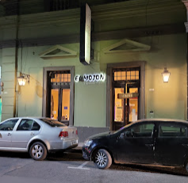

San Martín 858, Jujuy25 años
Un nombre que vino del carnaval.
En el año 2000, Carlos López abrió una puerta en calle San Martín con una idea sencilla: hacer una empanada distinta, y servir los sabores del norte como se hacen en casa. Al local lo llamó El Mojón, por el sitio donde se desentierra y se entierra al diablo del carnaval jujeño.
Un cuarto de siglo después, la carta sigue creciendo sobre la receta familiar: empanadas de carne, pollo, queso y queso de cabra; humita, tamales, locro y pastel de choclo; también una vuelta por la cocina árabe que trajo la familia: sfijas, kippe, niños envueltos, tabule.
- 2000Abre El Mojón
- +1.000Opiniones 4,4★ en Google
- 2025Declarado de interés municipal